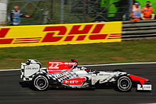

PERSONAL INFORMATION
Daniel Joseph Ricciardo was born on 1 July 1989 in Perth, Western Australia, to Italian parents of Ficarra born father Giuseppe "Joe" Ricciardo and Australian born mother Grace, with parents originally from Calabria. Ricciardo also has a sister; Michelle. Growing up in Duncraig, one of Perth's northern suburbs, Ricciardo's earliest memories of motorsports were of his father racing at the nearby Barbagallo Raceway in Wanneroo. He attended high school at Newman College. Ricciardo pronounces his surname "Ricardo" instead of the Italian pronunciation "Rit-chi-ardo", attributing this to the way it was usually pronounced growing up in Australia and by his family. He is often referred to as "the honey badger" in reference to his racing style, explaining how "It's supposed to be the most fearless animal in the animal kingdom. When you look at it, he seems quite cute and cuddly, but as soon as someone crosses his territory in a way he doesn't like, he turns into a bit of a savage and he'll go after anything – tigers, pythons – he turns very quickly, but he's a good guy." Growing up as a fan of NASCAR Cup Series driver Dale Earnhardt, Ricciardo adopted the number 3 as his racing number in honour of him.
CAREER
2011[HRT]
·Ricciardo was given the chance to make his F1 debut at the British Grand Prix with struggling back-of-the-grid team HRT. He took the place of Narain Karthikeyan in their race line-up.
·Ricciardo remained at the team for the rest of the season, showing gradual signs of progress and faring well against his more experienced team mates. That earned him a promotion to Toro Rosso’s race team for 2012.
2012[Toro Rosso]

·Ricciardo was quick to deliver on the points-scoring potential of the STR7, coming home ninth in his home race at Melbourne. But 11 races passed before he returned to the points as Toro Rosso found themselves at the tail of a congested midfield.
·Buoyed by the arrival of James Key to replace technical director Giorgio Ascanelli, Ricciardo became a regular conteder for points in the second half of the season. In Korea a gearbox problem left him 21st on the grid but he finished ninth and would have been higher had a technical glitch not dropped him behind team mate Jean-Eric Vergne.
2013[Toro Rosso]

·Ricciardo was generally ahead of Vergne in their second season together, particularly in qualifying where he retained a significant advantage. But the car was little more competitive than its predecessor, and the pair rarely rose above the lower reaches of the points.
·Nonetheless when Mark Webber announced his retirement from Formula One, Red Bull selected Ricciardo to replace him in 2014.
2014[Red Bull]

·Ricciardo joined the reigning champions just as their grasp on the title was slipping: next to Mercedes’ dominant W05, the RB10 was clearly second best.
·But it was capable of winning races – in Ricciardo’s hands at least. To the surprise of many, it was not the reigning four-times champion Sebastian Vettel who took Red Bull’s three wins that year, but the new addition to the team.
·The season had begun on a slightly sour note as Ricciardo’s drive to second place at home in Australia was rewarded only with disqualification for a technical infringement. But in Canada the two Mercedes hit trouble and Ricciardo took advantage, brilliantly passing Sergio Perez’s Force India around the outside on his way to his first victory.
·The second, in Hungary, was more fortuitous, thanks in part to a conveniently-timed Safety Car period. The in Belgium he was again the best placed driver to take advantage of trouble at Mercedes – this time after Lewis Hamilton and Nico Rosberg tangled with each other.
·Ricciardo backed up those conspicuous successes with a series of strong points finishes which saw him end the year in third place. And with Vettel moving on to Ferrari, he became Red Bull’s de facto team leader.
2015[Red Bull]

·Early in Ricciardo’s second season at Red Bull it became clear there would not be a repeat of his 2014 triumphs. Despite hard work in the off-season to rectify their engine problems Renault arrived at the first race of the season with persistent ‘drive-ability’ problems and poor reliability too. Ricciardo got off the line well in Melbourne season-opener but was powerless to prevent a string of rivals passing him by.
·Ricciardo bore the brunt of the team’s misfortune during the season and being the only driver to run their upgraded engine late in the season was no advantage: it earned him another grid penalty in exchange for which he received an engine which offered little gains in performance.
·He at least enjoyed the distinction of being one of few drivers to overtake a Mercedes on track during the year, taking advantage of a damp track at the Circuit of the Americas to spring a surprise attack on Hamilton. He also jousted with the silver cars at the Hungaroring but came off worst following contact with both, slipping to third place at the flag.
·This was one of just two trips he made to the podium. The other came in Singapore, where Ricciardo believed his car had the pace to challenge Vettel’s race-winning Ferrari had it not been for two untimely Safety Car periods. He came in second.
2016[Red Bull]

·There were more missed opportunities in 2016, when Red Bull were again in race-winning shape. One came in Spain, where having led the early stages a questionable strategy call dropped Ricciardo off the podium.
·What made the loss even tougher to bear was that victory went to his new team mate, Max Verstappen. Worse was to come in Monaco, where an inspired Ricciardo flew to pole position and was on course to win until a slow pit stop dropped him behind Lewis Hamilton.
·Victory finally came his way at Sepang, ironically at Hamilton’s expense when the Mercedes driver suffered an engine failure. A strong second half of the season saw him finish third in the championship behind the Mercedes drivers, but Verstappen was coming on strong.
2017[Red Bull]

·Ferrari raised their game in 2017, relegating Red Bull to the third-best team again, so Ricciardo’s fifth place in the points was, realistically, the best result available. Indeed, he was a strong fourth in the points with four races to go, but three technical failures in the final fourth rounds allowed Raikkonen to pip him to fourth place.
·While Verstappen ended the year strongly, winning two of the final six rounds, Ricciardo was an ever-present contender for podium finishes. He prevailed in a dramatic race on the streets of Baku to win despite falling as low as 17th at one point in the race.
2018[Red Bull]

·While Verstappen made a somewhat shaky start to his second full year at Red Bull, Ricciardo was in excellent form. He won two of the opening six races, avenging his lost Monaco victory of two years earlier, and looked like a potential title contender.
·It didn’t last, however, and his faith in the team was undermined by a collision with Verstappen in Azerbaijan, which he felt the team did too little to help avoid. Verstappen had already extended his contract to remain at the team, while Ricciardo’s future remained in doubt.
·On August 3rd RaceFans revealed Ricciardo had agreed terms to leave Red Bull and join Renault for 2019.
2019[Renault]

·Ricciardo’s switch to Red Bull didn’t pay off. The team which finished fourth in the 2018 campaign slipped to fifth behind engine customers McLaren. Meanwhile Red Bull, having switched to Honda power, again came away from the season with three victories.
·The best of the slim pickings for Ricciardo came at Monza, where he led team mate Hulkenberg home in the team’s strongest result of the season, fourth and fifth. Elsewhere there were frustrations: He was disqualified in qualifying for the Singapore Grand Prix for an MGU-K infringement, and both cars were thrown out of the Japanese Grand Prix when their braking system was deemed not to comply with the rules.
2020[Renault]

·The Covid-19 pandemic delayed the start of the season and meant Ricciardo had to wait to discover if Renault’s latest car would be an improvement. He couldn’t wait to decide on his future, however. When Vettel’s departure from Ferrari was announced Ricciardo moved quickly, and though there was no route into the Scuderia for him, he took up the chance to take over from Vettel’s replacement Carlos Sainz Jnr at McLaren in 2021.
2021[McLaren]

·After two years at Renault F1 Team, Ricciardo joined McLaren for the 2021 Formula One World Championship as a replacement for Carlos Sainz Jr. who signed a multi-year deal with Ferrari.
·His team mate for 2021 is Lando Norris, who was retained by the team.
·Regarding his new contract, Ricciardo admitted that before signing for McLaren he had held talks with Ferrari about taking over Sebastian Vettel's seat but Ferrari had instead signed Sainz.
·He subsequently placed 7th in the 2021 season opener in Bahrain, having qualified 6th. At the following race, the 2021 Emilia Romagna Grand Prix, he finished 6th, having once again qualified in the same position.
·And the 2021 season is still going on
.
.
.
.
.
.
.
CURRENT STATISTICS
Number Of Race Starts: 191
Number Of Wins : 7
Number Of Podiums : 31
Number Of Career Points : 1175
Number Of Pole Positions : 3
Number Of Fastest Laps : 15
.
.
.
.
.
.
.